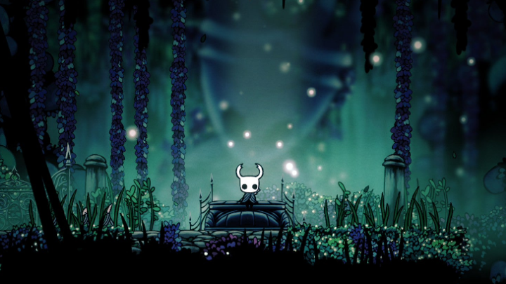
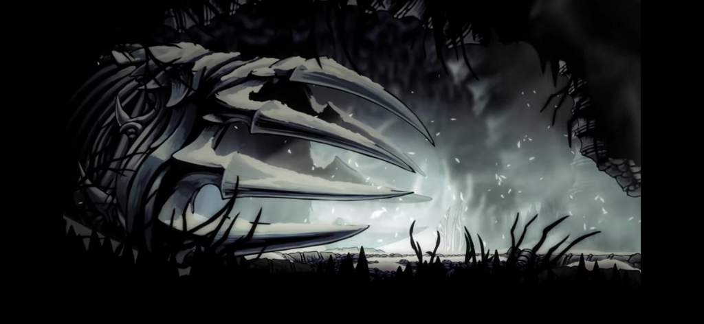
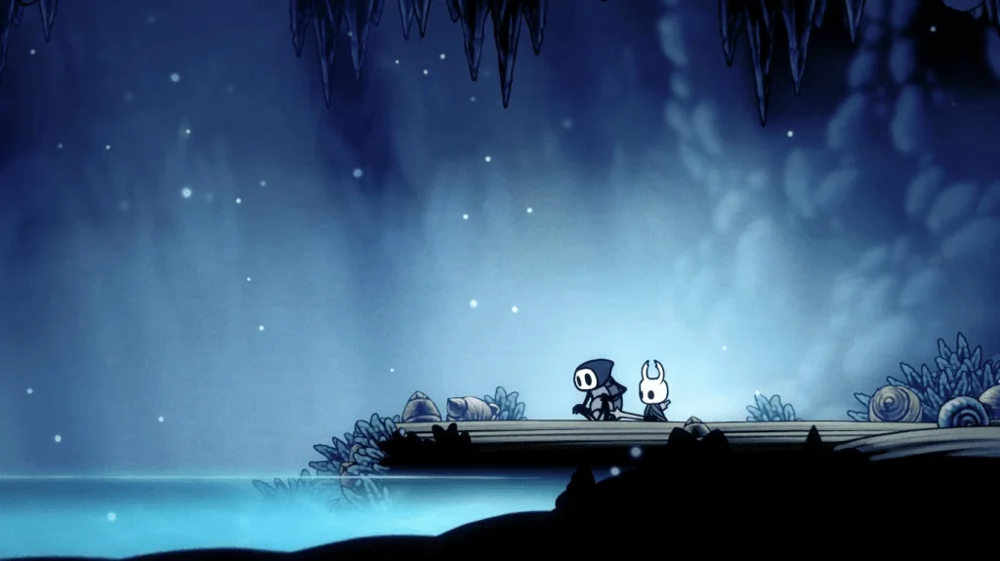

Você acorda em uma clareira, a floresta à sua frente está coberta pela Névoa Sombria. Você vê um pequeno brilho à sua direita, pulsando fracamente.

Você encontra um Cristal Cintilante, uma fonte de energia pura. Ao tocá-lo, sua luz se fortalece, mas a névoa ao redor dele se condensa em uma criatura hostil.

A Névoa Sombria começa a afetar suas memórias. Você se sente desorientado. Você ouve o lamento de uma alma perdida à sua frente e vê um feixe de luz fraca atrás de você.